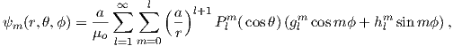
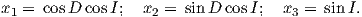
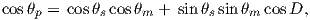
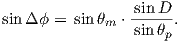
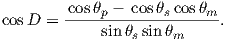

One of the major efforts in paleomagnetism has been to study ancient
geomagnetic fields. Because human measurements extend back about a
millenium, measurement of “accidental” records provided by archaeological or
geological materials remains the only way to investigate ancient field behavior.
Therefore it is useful for students of paleomagnetism to understand something
about the present geomagnetic field. In this chapter we review the general
properties of the Earth’s magnetic field.
The part of the geomagnetic field of interest to paleomagnetists is
generated by convection currents in the liquid outer core of the Earth
which is composed of iron, nickel and some unkown lighter component(s).
The source of energy for this convection is not known for certain, but is
thought to be partly from cooling of the core and partly from the bouyancy
of the iron/nickel liquid outer core caused by freezing out of the pure
iron inner core. Motions of this conducting fluid are controlled by the
bouyancy of the liquid, the spin of the Earth about its axis and by the
interaction of the conducting fluid with the magnetic field (in a horribly
non-linear fashion). Solving the equations for the fluid motions and resulting
magnetic fields is a challenging computational task. Recent numerical
models, however, show that such magnetohydrodynamical systems can
produce self-sustaining dynamos which create enormous external magnetic
fields.
The magnetic field of a dipole aligned along the spin axis and centered
in the Earth (a so-called geocentric axial dipole, or GAD) is shown in
Figure 2.1a. [See Chapter 1 for a derivation of how to find the radial and
tangential components of such a field.] By convention, the sign of the
Earth’s dipole is negative, pointing toward the south pole as shown in
Figure 2.1a and magnetic field lines point toward the north pole. They
point downward in the northern hemisphere and upward in the southern
hemisphere.
Although dominantly dipolar, the geomagnetic field is not perfectly modeled
by a geocentric axial dipole, but is somewhat more complicated (see
Figure 2.1b). At the point on the surface labeled ‘P’, the geomagnetic field
points nearly north and down at an angle of approximately 60∘. Vectors in three
dimensions are described by three numbers and in many paleomagnetic
applications, these are two angles (D and I) and the strength (B) as shown in
Figure 2.1b and c. The angle from the horizontal plane is the inclination I; it is
positive downward and ranges from +90∘ for straight down to -90∘ for straight
up. If the geomagnetic field were that of a perfect GAD field, the horizontal
component of the magnetic field (BH in Figure 2.1b) would point directly
toward geographic north. In most places on the Earth there is a deflection away
from geographic north and the angle between geographic and magnetic
north is the declination, D (see Figure 2.1c). D is measured positive
clockwise from North and ranges from 0 → 360∘. [Westward declinations can
also be expressed as negative numbers, i.e., 350∘ = -10∘.] The vertical
component (BV in Figure 2.1b,c) of the geomagnetic field at P, is given
by
 | (2.1) |
and the horizontal component BH (Figure 2.1c) by
 | (2.2) |
BH can be further resolved into north and east components (BN and BE in
Figure 2.1c) by
Depending on the particular problem, some coordinate systems are more
suitable to use because they have the symmetry of the problem built into them.
We have just defined a coordinate system using two angles and a length (B,D,I)
and the equivalent Cartesian coordinates of (BN,BE,BV ). We will need to
convert among them at will. There are many names for the Cartesian
coordinates. In addition to north, east and down, they could also be x,y,z or
even x1,x2 and x3. The convention used in this book is that axes are
denoted X1,X2,X3, while the components along the axes are frequently
designated x1,x2,x3. In the geographic frame of reference, positive X1 is
to the north, X2 is east and X3 is vertically down in keeping with the
right-hand rule. To convert from Cartesian coordinates to angular coordinates
(B,D,I):
 | (2.4) |
Be careful of the sign ambiguity of the tangent function. You may well
end up in the wrong quadrant and have to add 180∘; this will happen if
both x1 and x2 are negative. In most computer languages, there is a
function atan2 which takes care of this, but most hand calculators will not.
Remember that most computer languages expect angles to be given in radians,
not degrees, so multiply degrees by π∕180 to convert to radians. Note
also that in place of B for magnetic induction with units of tesla as a
measure of vector length, (see Chapter 1), we could also use H, M ( both
Am-1) or m (Am2) for magnetic field, magnetization or magnetic moment
respectively.
We can measure declination, inclination and intensity at different places around
the globe, but not everywhere all the time. Yet it is often handy to be able to
predict what these components are. For example, it is extremely useful to know
what the deviation is between true North and declination in order to find our
way with maps and compasses. In principle, magnetic field vectors can be derived
from the magnetic potential ψm as we showed in Chapter 1. For an axial dipolar
field, there is but one scalar coefficient (the magnetic moment m of a dipole
source). For the geomagnetic field, there are many more coefficients, including
not just an axial dipole aligned with the spin axis, but two orthogonal
equatorial dipoles and a whole host of more complicated sources such as
quadrupoles, octupoles and so on. A list of coefficients associated with
these sources allows us to calculate the magnetic field vector anywhere
outside of the source region. In this section, we outline how this might be
done.
As we learned in Chapter 1, the magnetic field at the Earth’s surface can be
calculated from the gradient of a scalar potential field (H = -∇ψm), and this
scalar potential field satisfies Laplace’s Equation:
 | (2.5) |
For the geomagnetic field (ignoring external sources of the magnetic field which
are in any case small and transient), the potential equation can be written
as:
where a is the radius of the Earth (6.371 × 106 m). In addition to the radial
distance r and the angle away from the pole θ, there is ϕ, the angle around the
equator from some reference, say, the Greenwich meridian. Here, θ is the
co-latitude and ϕ is the longitude. The glms and hlms are the gauss coefficients
(degree l and order m) for hypothetical sources at radii less than a calculated for
a particular year. These are normally given in units of nT. The Plms are wiggly
functions called partially normalized Schmidt polynomials of the argument cosθ.
These are closely related to the associated Legendre polynomials. [When m = 0
the Schmidt and Legendre polynomials are identical.] The first few of Plms
are:

and are shown in Figure 2.2.
To get an idea of how the gauss coefficients in the potential relate to the
associated magnetic fields, we show three examples in Figure 2.3. We plot the
inclinations of the vector fields that would be produced by the terms with
g10,g20 and g30 respectively. These are the axial (m = 0) dipole (l = 1),
quadrupole (l = 2) and octupole (l = 3) terms. The associated potentials for each
harmonic are shown in the insets.
In general, terms for which the difference between the subscript (l) and the
superscript (m) is odd (e.g., the axial dipole g10 and octupole g30) produce
magnetic fields that are antisymmetric about the equator, while those for which
the difference is even (e.g., the axial quadrupole g20) have symmetric
fields. In Figure 2.3a we show the inclinations produced by a purely
dipolar field of the same sign as the present day field. The inclinations
are all positive (down) in the northern hemisphere and negative (up) in
the southern hemisphere. In contrast, inclinations produced by a purely
quadrupolar field (Figure 2.3b) are down at the poles and up at the
equator. The map of inclinations produced by a purely axial octupolar field
(Figure 2.3c) are again asymmetric about the equator with vertical directions of
opposite signs at the poles separated by bands with the opposite sign at
mid-latitudes.
As noted before, there is not one, but three dipole terms in Equation 2.6, the
axial term (g10) and two equatorial terms (g11 and h11). Therefore, the total
dipole contribution is the vector sum of these three or  . The
total quadrupole contribution (l = 2) combines five coefficients and the total
octupole (l = 3) contribution combines seven coefficients.
. The
total quadrupole contribution (l = 2) combines five coefficients and the total
octupole (l = 3) contribution combines seven coefficients.
So how do we get this marvelous list of gauss coefficients? If you want to
know the details, please refer Langel (1987). We will just give a brief
introduction here. Recalling Chapter 1, once the scalar potential ψm is
known, the components of the magnetic field can be calculated from it. We
solved this for the radial and tangential field components (Hr and Hθ) in
Chapter 1. We will now change coordinate and unit systems and introduce a
third dimension (because the field is not perfectly dipolar). The north,
east, and vertically down components are related to the potential ψm
by:
 | (2.7) |
where r, θ, ϕ are radius, co-latitude (degrees away from the North pole)
and longitude, respectively. Here, BV is positive down, BE is positive
east, and BN is positive to the north, the opposite of Hr and Hθ as
defined in Chapter 1. Note that Equation 2.7 is in units of induction, not
Am-1 if the units for the gauss coefficients are in nT, as is the current
practice.
Going backwards, the gauss coefficients are determined by fitting
Equations 2.7 and 2.6 to observations of the magnetic field made by magnetic
observatories or satellite for a particular time. The International (or Definitive)
Geomagnetic Reference Field or I(D)GRF, for a given time interval is an agreed
upon set of values for a number of gauss coefficients and their time derivatives.
IGRF (or DGRF) models and programs for calculating various components
of the magnetic field are available on the internet from the National
Geophysical Data Center; the address is http://www.ngdc.noaa.gov. there is
also a program igrf.py included in the PmagPy package (see igrf.py
documentation).
In practice, the gauss coefficients for a particular reference field are estimated
by least-squares fitting of observations of the geomagnetic field. You need a
minimum of 48 observations to estimate the coefficients to l = 6. Nowadays, we
have satellites which give us thousands of measurements and the list of
generation 10 of the IGRF for 2005 goes to l = 13.
Table 2.1: IGRF, 10th generation (2005) to l = 6.
|
|
|
|
|
|
|
|
| l | m | g( nT) | h (nT) | l | m | g( nT) | h (nT) |
|
|
|
|
|
|
|
|
| 1 | 0 | -29556.8 | 0 | 5 | 0 | -227.6 | 0 |
| 1 | 1 | -1671.8 | 5080 | 5 | 1 | 354.4 | 42.7 |
| 2 | 0 | -2340.5 | 0 | 5 | 2 | 208.8 | 179.8 |
| 2 | 1 | 3047 | -2594.9 | 5 | 3 | -136.6 | -123 |
| 2 | 2 | 1656.9 | -516.7 | 5 | 4 | -168.3 | -19.5 |
| 3 | 0 | 1335.7 | 0 | 5 | 5 | -14.1 | 103.6 |
| 3 | 1 | -2305.3 | -200.4 | 6 | 0 | 72.9 | 0 |
| 3 | 2 | 1246.8 | 269.3 | 6 | 1 | 69.6 | -20.2 |
| 3 | 3 | 674.4 | -524.5 | 6 | 2 | 76.6 | 54.7 |
| 4 | 0 | 919.8 | 0 | 6 | 3 | -151.1 | 63.7 |
| 4 | 1 | 798.2 | 281.4 | 6 | 4 | -15 | -63.4 |
| 4 | 2 | 211.5 | -225.8 | 6 | 5 | 14.7 | 0 |
| 4 | 3 | -379.5 | 145.7 | 6 | 6 | -86.4 | 50.3 |
| 4 | 4 | 100.2 | -304.7 | | | | |
|
|
|
|
|
|
|
|
| |
In order to get a feel for the importance of the various gauss coefficients, take
a look at Table 2.1, which has the Schmidt quasi-normalized gauss coefficients
for the first six degrees from the IGRF for 2005. The power at each degree is the
average squared field per spherical harmonic degree over the Earth’s surface
and is calculated by Rl = ∑
m(l + 1)[(glm)2 + (hlm)2] (Lowes, 1974).
The so-called Lowes spectrum is shown in Figure 2.4. It is clear that the
lowest order terms (degree one) totally dominate, constituting some 90%
of the field. This is why the geomagnetic field is often assumed to be
equivalent to a magnetic field created by a simple dipole at the center of the
Earth.
The beauty of using the geomagnetic potential field is that the vector field can be
evaluated anywhere outside the source region. Using the values for a
given reference field in Equations 2.6 and 2.7, we can calculate values
of B,D and I at any location on Earth. Figure 2.1b shows the lines
of flux predicted from the 2005 IGRF from the core-mantle boundary
up. We can see that the field becomes simpler and more dipolar as we
move from the core mantle boundary to the surface. Yet, there is still
significant non-dipolar structure in the geomagnetic field even at the Earth’s
surface.
We can recast the vectors at the surface of the Earth into maps of
components as shown in Figure 2.5a,b. We show the potential in Figure 2.5c for
comparison with that of a pure dipole (inset to Figure 2.3a). These maps
illustrate the fact that the field is a complicated function of position on the
surface of the Earth. The intensity values in Figure 2.5a are, in general, highest
near the poles (~ 60 μT) and lowest near the equator (~ 30 μT), but the
contours are not straight lines parallel to latitude as they would be for a field
generated strictly by a geocentric axial dipole (GAD) (e.g, Figure 2.1a).
Similarly, a GAD would produce lines of inclination that vary in a regular way
from -90∘ to +90∘ at the poles, with 0∘ at the equator; the contours would
parallel the lines of latitude. Although the general trend in inclination shown in
Figure 2.5b is similar to the GAD model, the field lines are more complicated,
which again suggests that the field is not perfectly described by a geocentric bar
magnet.
Perhaps the most important result of spherical harmonic analysis for our
purposes is that the field at the Earth’s surface is dominated by the degree one
terms (l = 1) and the external contributions are very small. The first order terms
can be thought of as geocentric dipoles that are aligned with three different axes:
the spin axis (g10) and two equatorial axes that intersect the equator at the
Greenwich meridian (h10) and at 90∘ East (h11). The vector sum of these
geocentric dipoles is a dipole that is currently inclined by about 10∘ to the spin
axis. The axis of this best-fitting dipole pierces the surface of the Earth at the
circle in Figure 2.6. This point and its antipode are called geomagnetic poles.
Points at which the field is vertical (I = 90∘ shown by a square in
Figure 2.6) are called magnetic poles, or sometimes dip poles. These poles are
distinguishable from the geographic poles, where the spin axis of the Earth
intersects its surface. The northern geographic pole is shown by a star in
Figure 2.6.
It turns out that when averaged over sufficient time, the geomagnetic field
actually does seem to be approximately a GAD field, perhaps with a pinch of g20
thrown in (see e.g., Merrill et al., 1996). The GAD model of the field will serve as
a useful crutch throughout our discussions of paleomagnetic data and
applications. Averaging ancient magnetic poles over enough time to average out
secular variation (thought to be 104 or 105 years) gives what is known as a
paleomagnetic pole; this is usually assumed to be co-axial with the Earth’s
geographic pole (the spin axis).
Because the geomagnetic field is axially dipolar to a first approximation, we
can write:
Note that g10 is given in nT in Table 2.1. Thus, from Equation 2.8,
 | (2.9) |
Given some latitude λ on the surface of the Earth in Figure 2.1a and using the
equations for BV and BN, we find that:
This equation is sometimes called the dipole formula and shows that the
inclination of the magnetic field is directly related to the co-latitude (θ) for a
field produced by a geocentric axial dipole (or g10). The dipole formula allows us
to calculate the latitude of the measuring position from the inclination of the
(GAD) magnetic field, a result that is fundamental in plate tectonic
reconstructions. The intensity of a dipolar magnetic field is also related to
(co)latitude because:
The dipole field intensity has changed by more than an order of magnitude in the
past and the dipole relationship of intensity to latitude turns out to be not useful
for tectonic reconstructions.
Magnetic field and magnetization directions can be visualized as unit vectors
anchored at the center of a unit sphere. Such a unit sphere is difficult to
represent on a 2-D page. There are several popular projections, including the
Lambert equal area projection which we will be making extensive use of in later
chapters. The principles of construction of the equal area projection are covered
in the Appendix B.1.
In general, regions of equal area on the sphere project as equal area
regions on this projection, as the name implies. Plotting directional data in
this way enables rapid assessment of data scatter. A drawback of this
projection is that circles on the surface of a sphere project as ellipses.
Also, because we have projected a vector onto a unit sphere, we have lost
information concerning the magnitude of the vector. Finally, lower and upper
hemisphere projections must be distinguished with different symbols. The
paleomagnetic convention is: lower hemisphere projections (downward
directions) use solid symbols, while upper hemisphere projections are
open.
The dipole formula allows us to convert a given measurement of I to an
equivalent magnetic co-latitude θm:
If the field were a simple GAD field, θm would be a reasonable estimate of θ,
but non-GAD terms can invalidate this assumption. To get a feel for the effect of
these non-GAD terms, we consider first what would happen if we took random
measurements of the Earth’s present field (see Figure 2.7). We evaluated the
directions of the magnetic field using the IGRF for 2005 at 200 positions on the
globe (shown in Figure 2.7a). These directions are plotted in Figure 2.7b using
the paleomagnetic convention of open symbols pointing up and closed
symbols pointing down. In Figure 2.7c, we plot the inclinations as a
function of latitude. As expected from a predominantly dipolar field,
inclinations cluster around the values for a geocentric axial dipolar field but
there is considerable scatter and interestingly the scatter is larger in the
southern hemisphere than in the northern one. This is related to the
low intensities beneath South America and the Atlantic region seen in
Figure 2.5a.
Often we wish to compare directions from distant parts of the globe. There is an
inherent difficulty in doing so because of the large variability in inclination with
latitude. In such cases it is appropriate to consider the data relative to the
expected direction (from GAD) at each sampling site. For this purpose, it is
useful to use a transformation whereby each direction is rotated such that the
direction expected from a geocentric axial dipole field (GAD) at the sampling
site is the center of the equal area projection. This is accomplished as
follows:
Each direction is converted to Cartesian coordinates (xi) by:
These are rotated to the new coordinate system (x′i, see Appendix A.3.5)
by:

where Id = the inclination expected from a GAD field (tanId = 2tanλ), λ is the
site latitude, and α is the inclination of the paleofield vector projected onto the
N-S plane (α = tan-1(x3∕x1)). The x′i are then converted to D′,I′ by
Equation 2.4.
In Figure 2.8a we show the geomagnetic field vectors evaluated at random
longitudes along a latitude band of 45∘N. The vectors are shown in their
Cartesian coordinates of North, East and Down. In Figure 2.8b we show what
happens when we rotate the coordinate system to peer down the direction
expected from an axial dipolar field at 45∘N (which has an inclination of 63∘).
The vectors circle about the expected direction. Finally, we see what happens to
the directions shown in Figure 2.7b after the D′,I′ transformation in
Figure 2.8. These are unit vectors projected along the expected direction for
each observation in Figure 2.7a. Comparing the equal area projection of
the directions themselves (Figure 2.7b) to the transformed directions
(Figure 2.8c), we see that the latitudal dependence of the inclinations has been
removed.
We are often interested in whether the geomagnetic pole has changed, or whether
a particular piece of crust has rotated with respect to the geomagnetic pole. Yet,
what we observe at a particular location is the local direction of the field vector.
Thus, we need a way to transform an observed direction into the equivalent
geomagnetic pole.
In order to remove the dependence of direction merely on position on the
globe, we imagine a geocentric dipole which would give rise to the observed
magnetic field direction at a given latitude (λ) and longitude (ϕ). The virtual
geomagnetic pole (VGP) is the point on the globe that corresponds to the
geomagnetic pole of this imaginary dipole (Figure 2.9a).
Paleomagnetists use the following conventions: ϕ is measured positive
eastward from the Greenwich meridian and ranges from 0 → 360∘; θ is measured
from the North pole and goes from 0 → 180∘. Of course θ relates to
latitude, λ by θ = 90 - λ. θm is the magnetic co-latitude and is given
by Equation 2.12. Be sure not to confuse latitudes and co-latitudes.
Also, be careful with declination. Declinations between 180∘ and 360∘
are equivalent to D - 360 ∘ which are counter-clockwise with respect to
North.
The first step in the problem of calculating a VGP is to determine
the magnetic co-latitude θm by Equation 2.12 which is defined in the
dipole formula (Equation 2.12). The declination D is the angle from the
geographic North Pole to the great circle joining the observation site S and
the pole P, and Δϕ is the difference in longitudes between P and S,
ϕp - ϕs. Now we use some tricks from spherical trigonometry as reviewed in
Appendix A.3.1.
We can locate VGPs using the law of sines and the law of cosines. The
declination D is the angle from the geographic North Pole to the great circle
joining S and P (see Figure 2.9) so:
which allows us to calculate the VGP co-latitude θp. The VGP latitude is given
by:
 so
90 > λp > 0 in the northern hemisphere and 0 < λp < 90 in the southern
hemisphere.
To determine ϕp, we first calculate the angular difference between the pole
and site longitude Δϕ.
 | (2.15) |
If cosθm ≥ cosθs cosθp, then ϕp = ϕs + Δϕ. However, if cosθm < cosθs cosθp
then ϕp = ϕs + 180 - Δϕ.
Now we can convert the directions in Figure 2.7b to VGPs (see Figure 2.9c).
The grouping of points is much tighter in Figure 2.9c than in the equal area
projection because the effect of latitude variations in dipole fields has been
removed. If a number of VGPs are averaged together, the average pole position is
called a “paleomagnetic pole”. How to average poles and directions is the subject
of Chapters 11 and 12.
The procedure for calculating a direction from a VGP is a similar procedure
to that for calculating the VGP from the direction. Magnetic colatitude θm is
calculated in exactly the same way as before and yields inclination from the
dipole formula. The declination can be calculated by solving for D in
Equation 2.14 as:

This equation works most of the time, but breaks down under some
circumstances, for example, when the pole latitude is further to the south
than the site latitude. The following algorithm works in the more general
case:

where C = |1 - (cosD)2|. Also, if -90 < Δϕ < 0 or if Δϕ > 180, then
D = 360 - D.
As pointed out earlier, magnetic intensity varies over the globe in a similar
manner to inclination. It is often convenient to express paleointensity values
in terms of the equivalent geocentric dipole moment that would have
produced the observed intensity at a specific (paleo)latitude. Such an
equivalent moment is called the virtual dipole moment (VDM) by analogy to
the VGP (see Figure 2.9a). First, the magnetic (paleo)co-latitude θm is
calculated as before from the observed inclination and the dipole formula
of Equation 2.10. Then, following the derivation of Equation 2.11, we
have
 | (2.16) |
Sometimes the site co-latitude as opposed to magnetic co-latitude is used in
the above equation, giving a virtual axial dipole moment (VADM; see
Figure 2.9d).
SUPPLEMENTAL READINGS: Merrill et al. (1996), Chapters 1 & 2
For this problem set, you will need the PmagPy package. Refer to the Installing
PmagPy section for help in downloading and installing it.
Problem 1
a) Write a python script in an IPython notebook that converts declination,
inclination and intensity to North, East, and Down (see PmagPy for a brief
tutorial on python programming). Read in the data from the Chapter_2
example data in the Datafiles/Essentials_Examples/Chapter 2 folder that is
part of the PmagPy software distribution and run them through your
function. For this the loadtxt function in the Numpy module will come in
handy.
b) Choose 10 random spots on the surface of the earth. Alternatively, you can use
the pmag.py function get_unf to generate a list for you. Then use the igrf
function in the ipmag module of the PmagPy package to evaluate the
declination, inclination and intensity at each of these locations in January 2006.
As with all PmagPy programs, and functions, you can find out what they do by
printing out the doc string:
print ipmag.igrf.__doc__
Calls like these generates help messages which will help you to call the function
properly.
c) Take the vectors from the output of Problem 1b and convert them to cartesian
coordinates, using the script you wrote in Problem 1a.
Problem 2
a) Plot the IGRF directions from Problem 1b on an equal area projection by
hand. Use the equal area net provided in Appendix B.1. Remember that the
outer rim is horizontal and the center of the diagram is vertical. Azimuth goes
around the rim with clockwise being positive. Put a thumbtack through
the equal area (Schmidt) net and place a piece of tracing paper on the
thumbtack. Mark the top of the stereonet with a tick mark on the tracing
paper.
To plot a direction, rotate the tick mark of the tracing paper around counter
clockwise until the top of the paper is rotated by the declination of the direction.
Then count tick marks toward the center from the outer rim (the horizontal) to
the inclination angle, plot the point, and rotate back so that the tick is North
again. Put all your points on the diagram.
b) Now use the ipmag functions plot_net and plot_di (see the example
notebook in the IPmag_tutorial of the PmagPy package at:
http://earthref.org/PmagPy/cookbook/#Notebooks,
or write your own! Both plots should look the same....
Problem 3
You went to Wyoming (112∘ W and 36∘ N) to sample some Cretaceous rocks.
You measured a direction with a declination of 345∘ and an inclination of
47∘.
a) What direction would you expect from the present (GAD) field?
b) What is the virtual geomagnetic pole position corresponding to the direction
you actually measured? [Hint: Use the function pmag.dia_vgp in the PmagPy
module. ]